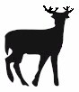

Wildlife Management
Background Birds Habitat Other WildlifeBackground
The management of wildlife on and near airports is not usually an easily solved problem. This management can be as diverse as habitat manipulation to use of predators to repelling wildlife to lethal control of wildlife. Types of wildlife associated with safety issues at airports include birds, mammals and reptiles. This section contains sources/references the reader may find useful in establishment of a personal management plan for their local airport .
Birds
Birds make-up 97% of the reported strikes, mammals about 3% and reptiles less than 1%. (FAA) The large number of bird strikes has resulted in a major effort by United States and Canadian airports officials to find ways to handle this problem, including the establishment of a Bird Strike Committee.
The following resources provide information on controlling birds at the airport:
- Bird Strike Committee - USA : US Committee devoted to reducing bird strike risk in aviation
- Bird Strike Committee - Canada : Canadian Committee devoted to reducing bird strike risk in aviation
- FAA Wildlife Hazard Management at Airports: Developing a wildlife control plan
- Transport Canada Template for the Development of an Airport Wildlife Management Plan
Habitat
Animals are attracted to areas that reflect their natural habitat and provide basic living needs such as food and water. By understanding and controlling possible animal habitats at the airport, wildlife strike risks can be reduced. For additional information on habitat modification or other procedures for controlling hazardous wildlife at airports, see FAA's Wildlife Hazardous Management at Airports and the Transport Canada Control Procedures Manual Improving Awareness of Wildlife-management Issues.
Airport Planning
Airport planning plays an important role in bird strike hazard reduction. Proper planning of an airport can help to recognize land uses on or near the airport site that can potentially attract wildlife. By controlling these land uses, bird strike hazard can be reduced. From archival data, it has been found that some of the most hazardous wildlife to airport operations include:Land uses that attract these species of wildlife include:
- Gulls
- Waterfowl
- Raptors
- Deer
Recognizing existing wildlife attractants, as well as mitigating the creation of new wildlife attractants on or near the airport will help to reduce the risk of wildlife strikes. For more information, see the FAA Circular 150/5200-33, Hazardous Wildlife Attractants on or Near Airports
- Putrescible-waste disposal operations
- Wastewater treatment facilities
- Wetlands
- Dredge spoil containment areas
Habitat Deterrence --Improper landscaping can attract animals to the airport and create wildlife hazards, while proper landscaping can deter animals away. Some plants provide food or shelter for potentially hazardous wildlife and should be avoided, while other plants may repel wildlife. Habitat deterrence is an effort to create an environment around the airport that is unattractive to potentially hazardous animals.For Information on deterrent landscaping see:
Other Habitat Information --Understanding an animal's habitat is key to creating a habitat deterrence. The following resources provide information as to the habitats of many different species.
- Wildlife Species Life Form (US Dept of Agriculture, Forest Service)
- Wildlife Species Life Form--Mammal List (US Dept of Agriculture, Forest Service)
- Wildlife Species Life Form--Bird List (US Dept of Agriculture, Forest Service)
- Wildlife Species Life Form--Reptile List (US Dept of Agriculture, Forest Service)
- Wildlife Species Life Form--Amphibian List (US Dept of Agriculture, Forest Service)
- Informational Series Fact Sheets (Connecticut Dept of Environmental Protection)
Other Wildlife
 Mammals are the most common animals other than birds which are associated with aircraft strikes. Mammal strikes are only a small per cent of the total recorded strikes, but strikes with large ungulates including deer are extremely dangerous. The number of white-tailed deer in the US has increased from 100,000 in 1900 to 26 million in 2000. In a ten-year period of 1990-1999 430 civil aircraft were involved with collisions with deer.